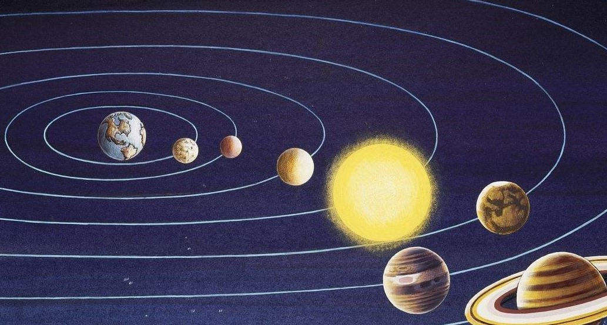
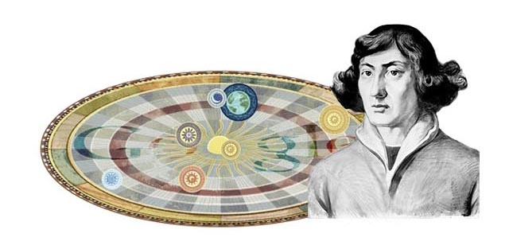

首页＞天文学史

2.地心说
地心说的起源很早，最初由古希腊学者欧多克斯提出，经亚里斯多德完善，又为托勒密进一步发展成为一个盛行于古代欧洲1000多年的宇宙学说体系。4.近代天文学
这一时期的标志波兰天文学家哥白尼提出了新的宇宙体系的理论——日心说。到了1610年，意大利天文学家伽利略独立制造折射望远镜，首次以望远镜看到了太阳黑子、月球表面和一些行星的表面和盈亏。在同时代，牛顿创立牛顿力学使天文学出现了一个新的分支学科天体力学。天体力学诞生使天文学从单纯描述天体的几何关系和运动状况进入到研究天体之间的相互作用和造成天体运动的原因的新阶段，在天文学的发展历史上，是一次巨大的飞跃。1.古代天文学
在古代世界各地都在不停探索，也有了各自的成就。中国命名星座和恒星，记录了世界最早的日食，采用28星宿划分天空，最早测定黄赤交《汉书·五行志》记载有世界上最早的太阳黑子记录。 巴比伦创建了第一份星历表，发现日月食循环的沙罗周期。做出最早的哈雷彗星记录.古希腊提出了地心说。
